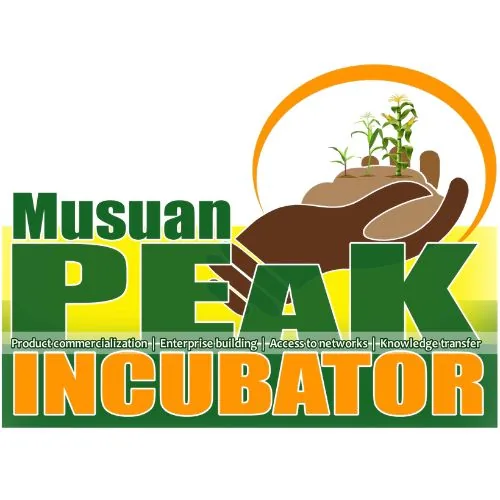

DOST-PCAARRD-CMU Agriculture, Food & Natural Resources TBI
Central Mindanao University · Region X
The DOST-PCAARRD-CMU Agriculture, Food & Natural Resources TBI is a Technology Business Incubator hosted by Central Mindanao University (CMU) in Maramag, Bukidnon. Established under the DOST-PCAARRD (Philippine Council for Agriculture, Aquatic and Natural Resources Research and Development) program, this TBI focuses on agri, food, and natural resources (AANR) innovation, supporting startups and researchers in commercializing agricultural and food technology solutions from one of Mindanao's premier agricultural universities.
- Category
- Technology Business Incubator
- Host institution
- Central Mindanao University
- City
- Maramag, Bukidnon
- Region
- Region X
- Operating status
- Operating
About the Center
Operating through CMU's innovation ecosystem, the TBI bridges CMU's agricultural research excellence with market opportunities, helping entrepreneurs in the agriculture, food processing, and natural resources sectors develop viable businesses in the Central Mindanao region.
Programs & Services
- Startup Incubation — Incubation support for AANR-focused ventures in agriculture, food processing, and natural resources
- Technology Commercialization — Assistance moving agricultural research outputs and innovations to market
- DOST-PCAARRD Funding Access — Linkage to DOST-PCAARRD grants, TECHNICOM, and agri-research funding programs
- Business Development — Business planning, IP management, and market strategy support
- Mentoring — Access to CMU faculty with expertise in agriculture, food science, and natural resources management
- MSME Support — Programs for agri-based micro and small enterprises in Bukidnon and Central Mindanao
- Research-to-Market Linkage — Connections between CMU's applied research and enterprise development opportunities
Contact
Sources & references
- ispweb.pcaarrd.dost.gov.ph/dost-pcaarrd-cmu-agriculture-food-and-natural-re…
- pcaarrd.dost.gov.ph/index.php/quick-information-dispatch-qid-articles/cmu-a…
- kms.cmu.edu.ph/cmuatbi
Details are drawn from public records and the sources above, July 2026.
Startupreneur Innovation Hub · synced from the Notion catalog (July 2026) · status: published.